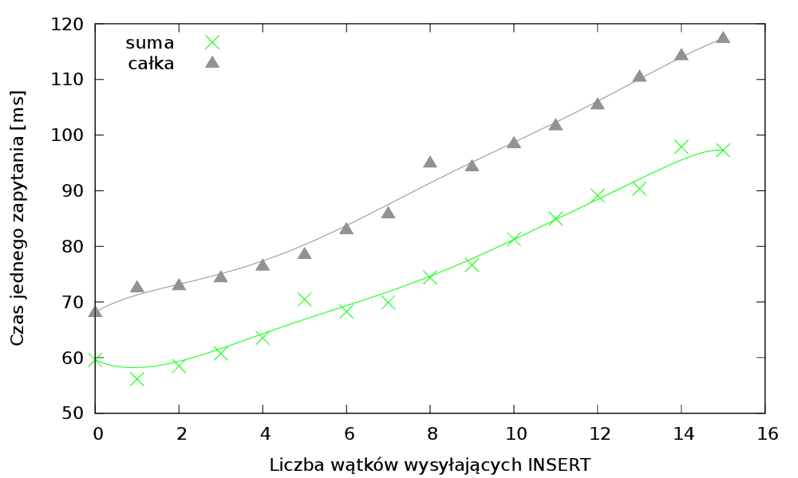
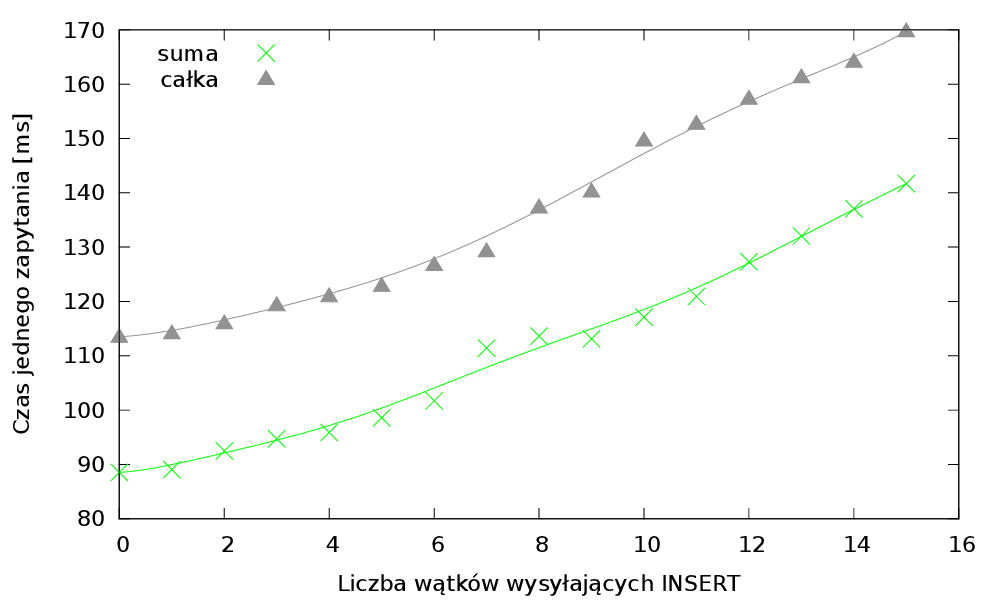

Rozproszona baza szeregów czasowych
dla klastra GPU
Karol Dzitkowski
Jakub Dutkowski
Tomasz Janiszewski
Plan prezentacji
- Ogólny opis systemu
- Opis Architektury
- Wyniki
- Podsumowanie
Założenia
- Baza danych szeregów czasowych
- Wykorzystanie technologi CUDA
- Zastosowanie kompresji na GPU
Cele
- Szybkość
- Niezawodność
- Łatwość użycia
- Skalowalność
- Konfigurowalność
Opis Architektury

Master
Master

Node - insert
Node - select
Wyniki
Rezultatem projektu jest funkcjonujący na klastrze GPU wydziału MiNI prototyp rozproszonej bazy danych. Baza ta jak założono przechowuje dane po stronie kart graficznych i korzysta z ich mocy obliczeniowej.Ilość zapytań obsługiwanych przez serwer główny na sekundę

Ilość zapytań typu Insert obsługiwanych przez węzeł na sekundę
Zapytania Select z równoleglymi Insert

100 000

100 000 000
5 000 000
10 000 000
Ilość przetrzymywanych danych
Zakładając że:- Dane wpływają ze średnią prędkością 25 000 elementów na sekundę
- Wielkość elementu po kompresji wynosi średnio 8 bajtów
- Posiadamy 3 klastry po 3 karty graficzne o pojemności 6 GB
- Baza danych ustawiona jest aby wykorzystywać 4GB na karcie na przechowywanie danych